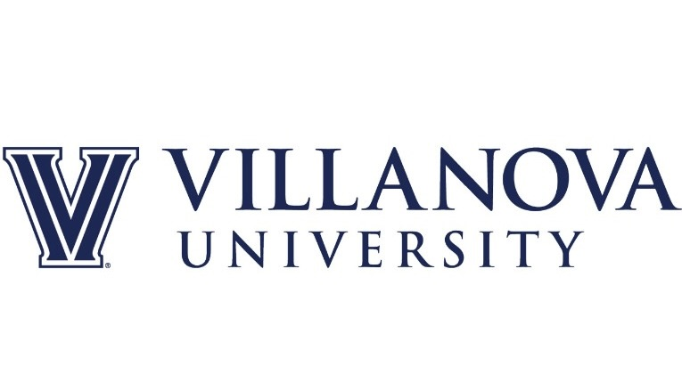
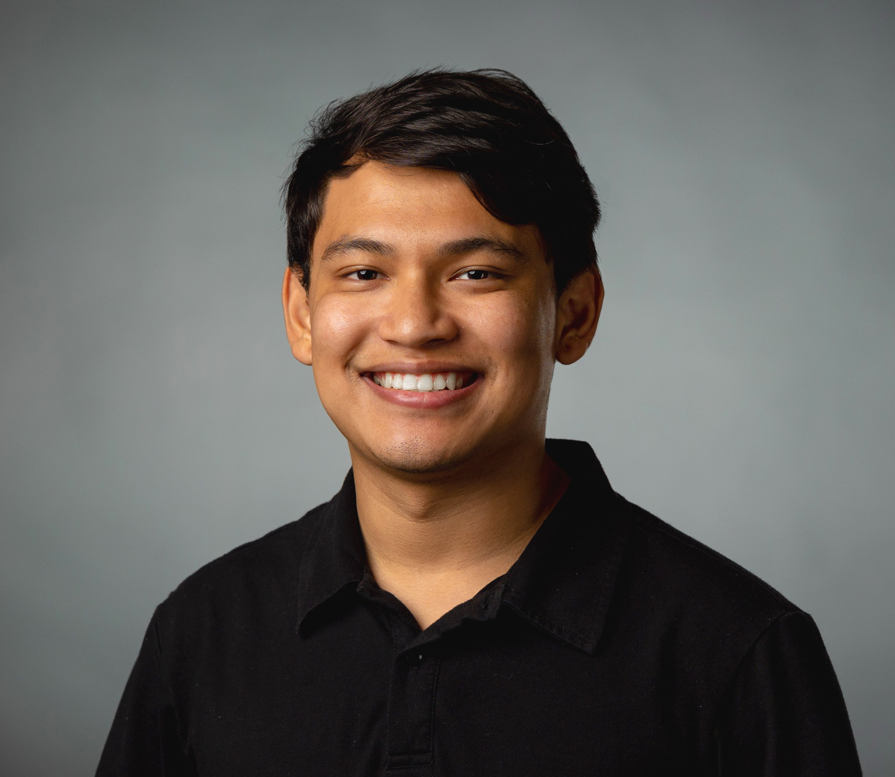

“
If you aren't scared, you aren't taking a chance.
”


Shashwat Maharjan
Developer | Includer | Positivity | Harmony | Analytical
Shashwat Maharjan is a PhD student in Mechanical Engineering at Villanova University, specializing in bioinspired material science and physics-informed machine learning. His research spans the development of bio-inspired dental adhesives, machine learning models for predicting stress fractures in athletes and military personnel, and the design of resilient composite structures inspired by ant cuticle architecture. With a strong foundation in finite element modeling and computational mechanics, he is focused on building intelligent tools that bridge physics, biology, and engineering for advanced material design.